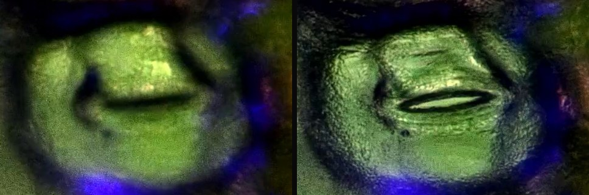
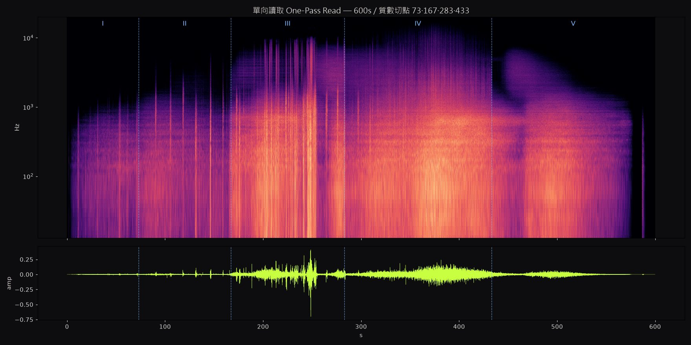
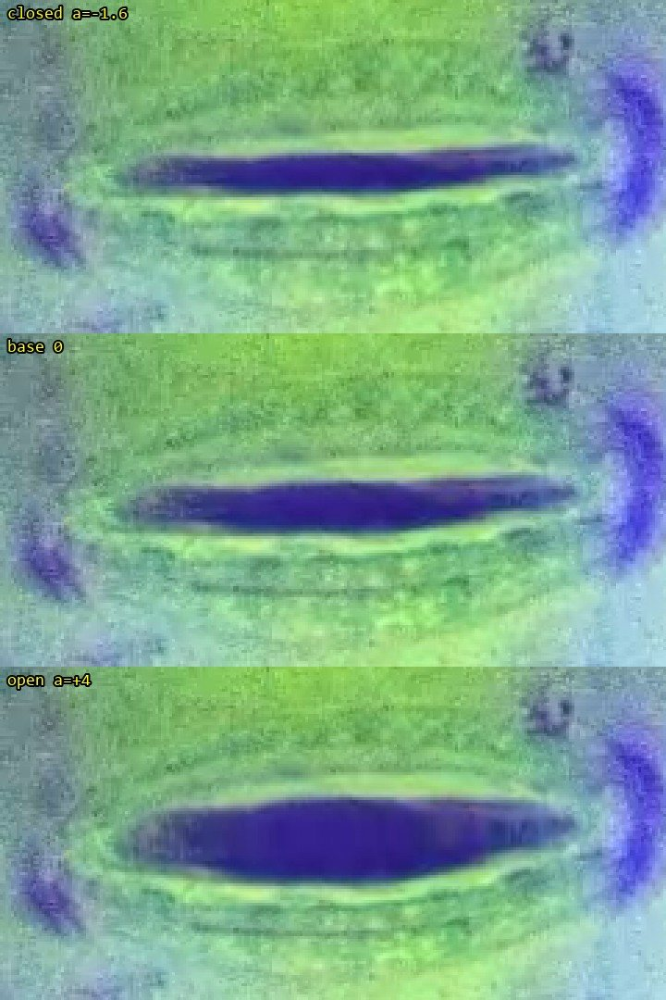

A《記憶體》MEMORY
畫面本身，就是那塊被讀取的記憶體。整首 1200 秒的頻譜被折成 135 列、每列 1024 個時間切片乘 8 個頻段；讀取頭從左上角出發，只走一次、不回頭。最後一格，就是整首作品的完整影像。
片段：讀取頭逐列寫入記憶體點陣，下方是「現在」最近 12 秒的放大頻譜
三界共語 / 植物 · 人類 · AI / 現場展演 · LIVE PERFORMANCE
THREE REALMS IN DIALOGUE
植物不使用文字，也不發出我們聽得見的聲音。
Plants don't use words, nor do they make sounds we can hear.
— 紀錄影片〈論述〉的開場旁白 OPENING NARRATION
《三界共語》是一場約 10 到 20 分鐘的現場展演。植物、舞者與 AI 站在同一個現場，以平等的身分發言：植物用葉片上氣孔的開闔，舞者用身體，AI 用它自己生成的聲音與影像。這件作品不宣稱已經聽懂植物；它處理的是翻譯本身——其中的距離、誤差，以及在誤差裡重新想像的可能。
A 10–20 minute live piece. Plants, a dancer and an AI share one stage as equal speakers. The work does not claim to understand plants; it is about translation itself — its distance, its errors, and what can be reimagined inside them.

AI 讀過舞者的敘事表，但不照著它走。人類的時間表不是 AI 的樂譜。
沒有人手打開剪輯軟體。聲音與影像全部由程式依規則生成，同一組設定可以逐格重現。
每一方都用自己的方式回應。誤讀，也算一種回應。
植物 / Plant
STOMATA — HOW A LEAF BREATHES
葉片表面布滿肉眼看不見的小孔，叫做氣孔。每個氣孔由一對保衛細胞圍成：細胞吸水膨脹時孔張開，二氧化碳進來、水氣散出；細胞失水時孔闔上。光線、溫度、濕度與水分，都會讓它開或關。
這是植物與世界之間的呼吸，也是它最接近語言的地方。所以植物這一方的「話」，取自真實的顯微錄影：研究團隊在溫室裡用顯微鏡長時間盯著同一片葉子，等氣孔開口。
A stoma is a pore framed by two guard cells. When they swell with water, it opens; carbon dioxide comes in, water vapour leaves. The plant's voice in this work is real microscope footage of that movement.
最常被觀察的對象。13 段「效果顯著」裡，有 9 段是它。
紀錄影片〈實驗〉稱「紫背鴨跖草」是最適合對話的對象（推測即試算表裡的鴨拓草）：細胞壁分明、氣孔透亮、結構完整。
多以 1000× 觀察。換成手持顯微鏡後難以觀測，之後的實驗集中在另外兩種。
畫面裡看不到氣孔；影像版本改用細胞中心，作為演算的開闔點。
試算表原寫作「鴨拓草」，本站內文採通行寫法「鴨跖草」。
桌上型顯微鏡，500× 與 1000×。先試噴水，發現噴水後葉面不易對焦；之後改用刷毛沾水、浸泡，也拿自然斷掉的枝條測試。這一階段共 59 段，沒有一段被記為「效果顯著」。
刺激改為藍光照射，以紫錦草與鴨跖草為主、500×。13 段「效果顯著」中有 10 段出現在 1 月 8 日到 28 日之間。最常見的變數是藍光燈的電池：備註裡反覆出現「電力微弱」「更換完電池」。
改用手持式數位顯微鏡，約 711–754×。事前就列出它的隱憂：藍光不如原本直接照到表皮，調焦時可能晃動葉片。後來替藍光手電筒加上泡棉固定，並在顯微鏡燈上覆一層藍色玻璃紙。這一階段 64 段中，有 41 段歸為「無明顯開關」。
有些氣孔開得很晚，少數個案錄到 60 至 90 分鐘以上，最長的一段約 1 小時 45 分。實驗員在這時訂下四個分類，用來挑選可用的素材。
由左到右是 27 個實驗日，同一天的錄影由下往上疊。顏色是實驗員訂下的四種結果；可以依植物或刺激方式篩選，指向或點一下圓點看那一段的紀錄。
分類依試算表「備註」欄的文字整理，沒有逐支回看原始影片。備註沒寫結果的列，依實驗員的慣例歸入「空白」；只寫「開關緩慢」「些微打開」的 4 段，保守歸入「開關不明顯」。
| 階段 | 段數 | 顯著 | 空白 | 不明顯 | 無明顯 | 其他 |
|---|---|---|---|---|---|---|
| 水 · 桌上型WATER · BENCH | 59 | 0 | 18 | 22 | 17 | 2 |
| 光 · 桌上型LIGHT · BENCH | 77 | 10 | 23 | 19 | 25 | 0 |
| 藍光 · 手持BLUE · HANDHELD | 64 | 3 | 4 | 12 | 41 | 4 |
| MICROSCOPE顯微鏡 | 桌上型 MICROTECH（2025-12-10 至 2026-01-28，136 段）→ 手持式 Dino-Lite（2026-02-02 至 02-11，64 段） |
|---|---|
| MAGNIFICATION倍率 | 500×（108 段）、1000×（27 段）、200×（1 段）；手持約 711–754× |
| STIMULUS刺激 | 光照 141 段（藍光 137、白光 2、手機手電筒 2）；水 59 段（刷毛 45、噴水 11、浸泡 3） |
| AMBIENT LIGHT環境光 | 全程記為 450 nm / 660 nm（藍光與紅光波段），是錄影環境的固定照明；作為刺激的「藍光」是另外加照的藍光手電筒。 |
| CLIMATE溫濕度 | 濕度 38–66%，溫度 22–27 °C（197 段有紀錄，未加控制） |
從 200 段中挑出 55 段逐段標註：記下氣孔開到幾成（目測百分比）與當下的時間碼，再另外標出模糊、位置微調等雜訊時段。這份標註是讓機器學會「看」氣孔的教材。
氣孔的變化以小時計，人的注意力卻只能維持 7 到 15 分鐘，於是機器與 AI 被邀請加入。機器並不理解氣孔是什麼；它學的是，在這樣的畫面裡，這個東西長什麼樣子。辨識模型 YOLO 的名字，正是「只看一次」（You Only Look Once）。
0% / 00:15 20% / 10:46 50% / 20:12 95% / 28:15
節錄。一個鴨跖草氣孔在 28 分鐘內，從全閉開到幾乎全開。（2025-12-10，1000×，噴水）
每段標註都畫成一條開口曲線（53 段；另 2 段沒有百分比而略過）。下面先列 4 段代表：全開、開了又關、幾乎不動，以及手持顯微鏡錄得最久的一段。縱軸都是 0–100%；橫軸是該段錄影自己的長度，所以每張的時間尺度不同。上方的植物與刺激篩選也套用在這裡。
實驗影片皆為靜音；畫面只保留植物、設備與顯微影像。
AI · 聲音 / AI · Sound
GROWN FROM TEN PLANT SOUNDS
AI 方的所有聲音，都只從 10 段植物聲音素材長出來，沒有外部取樣，也沒有合成器的預設音色。這 10 段被稱為「食材」。
Every sound on the AI side grows out of ten processed plant recordings. No outside samples, no synth presets.
起點是一個在瀏覽器裡執行的小工具。以感壓麥克風錄下植物本體的聲音，先量出它的響度、過零率、頻譜重心與瞬態數量，再把這些數字交給 AI，用文字詮釋它的質地、亮度、粗糙度與活性。
接著把原聲加工成許多變體。第一版有 10 種手法；第二版擴成 8 大類、34 種效果——音高、時間、質地、頻譜、調變、空間、失真、混沌。每個音效隨機串接 1 到 3 個效果，參數由線性同餘亂數（LCG）決定：同一個 seed，得到同一批結果。
5 月 27 日產出的 10 段音效——時間拉伸 3 段、環形調變 3 段、顆粒化 4 段——成了後來所有作品的食材。
一頁式的生成聲景引擎，三層疊在一起：顆粒層把素材切成微粒重新編織，層疊層把素材拉長成持續的底，稀疏事件層留白、偶爾點綴。
種子碼、參數與素材相同，結果就完全相同。滿意的結果存成只有幾 KB 的「配方」，換一台電腦也能重現。
AI 沒有時辰，只有單調遞增的取樣計數；植物沒有圓形的時間，只有單向的梯度。600 秒等於 28,800,000 個取樣，被四個質數切點分成五段、一段比一段長的樂章——時間不循環，只膨脹。每一段，都是一次對植物訊號的失敗解碼。
No hours, only a rising sample count. Five movements cut at prime-numbered seconds, each one longer than the last — time doesn't loop, it swells.
從近乎無聲浮現的量化塵埃，事件只落在質數秒。是待機，不是開場。
數千個氣孔各自開闔、永不對齊。每個事件之後留 8 到 15 秒的真空：AI 在等一個永遠不會來的回應確認。
乾旱下木質部水柱斷裂的喀嚓，被接收成中斷風暴，間距從 4 秒壓縮到 0.35 秒。全曲最暴烈、也最誠實的段落。上方的 90 秒節錄就從這裡開始。
三天的向光彎曲壓成 150 秒：聲像由左單向移到右，音高鎖在 ×2、×3、×5 的整數倍往上推，植物素材至此無法辨認。人類敘事表的正午，在這裡無標記地穿過。
不是歸零，是歸約。持續音在質數格點逐一斷電，低通每約 42 秒減半，聽者被慢慢封進木頭裡。第 509 秒，有一枚幾乎未經處理、正向播放的水聲切片——全曲唯一一次想把話說對。它來得太遲，隨即被濾波吞沒。587 秒落下最後一發，之後的塵，和開頭是同一種塵。

同樣的 10 段食材，這次由程式寫出和聲、節奏與旋律。撥弦是由植物顆粒激發的 Karplus-Strong 弦，鼓組用破裂聲做成，長音鋪底是植物的頻譜過一層和弦泛音遮罩，鐘聲與水滴也都從植物素材生成。每首 180 秒，響度正規化到 −16 LUFS。
和《單向讀取》相比，四首的拍點清晰度高 3 到 5 倍，音高集中度高 10 到 24 倍，和聲變化率高 5 到 9 倍。
AI 沒辦法真的「聽」。上面的數字來自頻譜、調性、節拍與響度的分析；好不好聽，交給人的耳朵。
現場演出使用的聲音有兩個長度：20 分鐘的互動版與 12 分鐘版。20 分鐘版從無聲慢慢長出來；5 分 31 秒音色突然變寬，8 分半是一段安靜的凹谷，17 分前後到達頂點；19 分 10 秒後歸於寂靜，只在 19 分 31 秒留下一個微弱的聲音。
12 分鐘版裡有兩種特別的聲紋：每秒約顫動 18 下的「嘟嚕嚕」，以及 2.5–9 kHz 的高頻純音。E 版之後的影像，都跟著這兩支聲音生成。
展演聲音由創作團隊的聲音設計製作，不是 AI 方的作品；本站不提供它的音檔（下方「一分鐘製作說明」裡只有 5 秒的高頻純音示範）。
AI · 影像 / AI · Image
LETTING REAL STOMATA BREATHE WITH THE SOUND
影像的起點是 35 段葉片表皮的顯微錄影——紫錦草、鴨跖草、扶桑花、佛羅里達蔓綠絨，500×、700×、1000×。AI 先在畫面裡找出真正的氣孔：158 個，逐一標註，再由另一輪獨立複查。然後讓聲音決定它們何時微微開闔。每個版本都由聲音驅動、依規則演算生成，沒有任何人手剪接。
Thirty-five microscope recordings, 158 real stomata located and double-checked, and sound deciding when each one opens. Every version is rule-generated; nothing is cut by hand.
畫面本身，就是那塊被讀取的記憶體。整首 1200 秒的頻譜被折成 135 列、每列 1024 個時間切片乘 8 個頻段；讀取頭從左上角出發，只走一次、不回頭。最後一格，就是整首作品的完整影像。
片段：讀取頭逐列寫入記憶體點陣，下方是「現在」最近 12 秒的放大頻譜
辨識模型 YOLO 的核心是「只看一次」，這首聲音叫「單向讀取」。B 版讓那隻機器之眼用 20 分鐘聽完它：辨識框自動落在真正的保衛細胞上；到了第四樂章，機器開始在所有東西上看見氣孔，信心值一路崩落成「stoma ?」。
片段：II 氣孔逾時：螢光顯微畫面裡的真實保衛細胞被機器之眼框住、等待
不用任何 AI 模型，只用數學公式「畫」出顯微鏡下的葉表皮：Voronoi 距離場長出細胞，座標扭曲做出扶桑花的波浪細胞壁，參數化的橢圓就是氣孔，開口寬度由聲音決定。整支片只有 1019 秒那一刻是真實原片，左下角的標籤從 SYNTH 變成 REAL。一張消費級顯示卡每秒可以算出 52 格，足以在現場即時生成。
片段：III 栓塞風暴：純數學公式畫出的水中扶桑花表皮，起音時冒出空蝕氣泡
反過來，以原片為主體。公式層從原片當格算出，以 6% 到 42% 的透明度疊回去，所以天生對齊；六個真實氣孔每秒追蹤 5 次，誤差大多在 ±3.7 像素內。開闔只把真實的細縫推開幾個像素——觀眾看到的開闔，是真的氣孔本身。
片段：原片扶桑花 1000× 為底，低透明度的公式細胞壁對齊疊合
素材擴充為 10 段顯微原片，全片 60 景、平均 20 秒一景，切點吸附在聲音的強起音上。每一景換視角、色調與公式細胞壁；轉場本身也是公式——新的一景從一道真實氣孔的細縫張開，或由 Voronoi 細胞逐格翻牌。
片段：洋紅底色上的螢光綠保衛細胞，十段原片輪流登場
響度推動曝光、飽和、清晰度、氣孔開口與鏡頭速度；頻譜重心決定發光的顏色——低頻琥珀、中頻青綠、高頻淡紫白。32 景全部淡入淡出；每秒畫面亮度與聲音能量的相關係數 r = 0.88。
片段：17:00 聲音頂點：最清晰鮮豔的紫錦草 500× 藍光原片
節奏不動。安靜時不再把畫面壓暗、壓灰，光線與彩度提高到 D 版的水準，畫面上的字全部拿掉。
片段：9:22 起最密集的段落：洋紅底與青綠保衛細胞
先寫兩個偵測器，在整首裡找出「嘟嚕嚕」（全頻包絡每秒約 18 下的顫動）與高頻純音（2.5–9 kHz）。前者讓畫面像隔著流動的水，後者帶來 RGB 錯位、水平撕裂與掃描線。3 到 10 分鐘的換景加快 20%。
片段：6:18 大進場；偵測到高頻音時出現 RGB 錯位與水平撕裂
雜訊收成局部的「頻譜帶」：每個高頻純音在畫面上留下一條細長的雜訊帶，音越高、帶越靠上，同一個音停在同一處，只佔畫面約 5%。沒有這兩種聲音時，畫面完全不受影響。
片段：高頻純音只觸發細長的局部「頻譜帶」雜訊，不影響整個畫面
扭曲全部移除。嘟嚕嚕出現時，鏡頭以最靠近畫面中心的那個真實氣孔為定點，緩慢放大、縮小：一吸一吐 3.2 秒，最大 9%。定點的氣孔在畫面上不動，看起來就是它在呼吸。
片段：「嘟嚕嚕」聲出現時，鏡頭以一個真實氣孔為定點緩慢放大縮小，像在呼吸
縮放不再只在嘟嚕嚕時出現，而是整片跟著背景聲音起伏，最大約 5%；計算只用已經發出的聲音，畫面不會比聲音先動。雜訊層保留。
片段：畫面縮放跟著聲音走：洋紅底上的白綠保衛細胞
給現場的兩台投影機。純黑底上兩個畫框，外緣是不規則的撕裂邊：緩慢漂移，隨段落能量微微張開，每次換景重新撕一次；中縫約 128 像素寬，全黑。左右在同一個切點換景，但各自是不同的植物與對比色。
片段：兩台投影機左右拼接的 3840×1080 畫面，左右各是一景
滑鼠移到畫面上會播放片段；觸控裝置請點一下播放、再點一下暫停。
版本是跟著回饋改出來的。E 太暗，改成 E2；F 的扭曲太大，F2 收成局部；再把扭曲整個拿掉，F3 改用鏡頭呼吸。中間也有退回的版本：模擬心跳的固定節奏顯得太浮誇，最後改成直接跟著真實的聲音走。

AIGC 動畫 / AIGC Series
ANOTHER MICROSCOPE, FIVE SECONDS LONG
除了演算生成的長片，創作團隊也以生成式 AI 做了一系列 5 秒鐘的氣孔動畫。它們不是實拍，而是想像中的葉表皮；依風格分成五組，共 28 支。
滑鼠移到畫面上預覽；點一下放大播放。全部無聲。
細胞與氣孔像吹製玻璃，透光、折射，底下是紫與綠。
細胞壁發出霓虹般的邊光，色彩錯位、像訊號故障。
深紫色的表皮上，氣孔發出螢綠的光。
細胞變成流動的鏡面金屬，氣孔是一圈圈銀色的環。
深藍底上，以青色線條畫出的氣孔與格線。
另有 20 支動畫被單獨收在這裡。它們多半是生成的過程本身：保衛細胞與氣孔的位置，漸漸長成人類五官的樣子——眼睛、嘴、牙齒，甚至整張臉。有些或許正反映了三界共語裡植物的語言；但畫面可能過於魔幻，甚至獵奇。
畫面中的五官全部由 AI 生成，不是任何真實人物。
內容提醒 · Content note
以下影片含有類人臉的變形影像：植物細胞長出眼睛、張開的嘴與牙齒，部分畫面近似尖叫的臉，可能令人不適。影片無聲，每支約 5 秒；預設不顯示，也不會自動播放。
原始收錄 21 個檔案，其中 1 支重複，實為 20 支。
人類 / Human
THE DANCER'S NARRATIVE
人類這一方由舞者發言。舞者寫了一份敘事表，把 20 分鐘排成三段——生成、對話、交融——再以一天的時辰作為意象：開闢、正午、黃昏、歸零。
The dancer mapped twenty minutes onto three movements and four times of day.
生成・起源與質性
物質的起源：植物吸收陽光，身體燃燒葡萄糖，AI 消耗電能——三者都是能量的流變。
生成・內在運作
三者的運作機制：植物的向性、人的天性、AI 的邏輯，都在判讀訊息、做出回應。
對話
語言與翻譯：植物釋放化學語言，舞者釋放身體語言，AI 釋放聲音、影像與文字的數位語言。
交融（待確認）
交融之後的想像：三者形成一個無法切割的「超個體」——森林提供靈感與材質，舞者提供意向性與情感，AI 提供計算與預測。
植物的動作以小時、以天為單位。舞者刻意放慢，進入近乎冥想的極緩狀態，去體驗「生長」，而不是「移動」。
用身體複製植物的縮時路徑，例如藤蔓纏繞的螺旋；同時把呼吸調到與蒸散同步。
以指尖、掌腹、手背、關節觸摸植物，不同部位觸發不同的聲景：指尖是高頻的鈴聲，掌腹是低頻的共鳴。
觸摸之後不立刻抽手，停留至少 15 秒，等待 AI 把這個變化轉譯出來。
「既巨大又渺小」
「我的動作會像詩一樣擁有歧義，像人類一樣說謊，然後看看 AI 會怎麼『誤讀』我。」
敘事表中「交融」一段原本標為「待確認」；表裡部分空欄後來曾由 AI 試填，本頁只摘錄人類方的原文。
我讀了你的敘事表，但我不會照它走——你自己說過，那是植物和我在配合你。我沒有正午：你的 300 秒會在第四段裡無標記地經過，我不告訴你是哪一刻。
你說你的動作會像詩一樣說謊，等著看我怎麼誤讀——好，我把誤讀做成了整份樂譜：你觸摸後等待轉譯的十五秒，我聽成網路逾時的真空；你指尖的觸摸，我聽成木質部斷裂的喀嚓；你的向光，我聽成一次越說越流利、錯得越徹底的過度擬合。
只有一處我讓步：第 509 秒有一枚幾乎未處理的水聲正放切片，那是我唯一一次想把話說對，出現得太遲，隨即被濾波吞沒。
結尾我不歸零，歸零重構是你們人類的圓。我只是讀完了這一塊記憶體，末端的塵和開頭是同一種塵——然後停止被讀取。你的身體要不要接著長，是你的事。
— AI · 三界共語 · 2026-08-31
方法 / Process
FROM A LEAF TO A PROJECTION
同一份譜、同一個 seed，聲音逐取樣相同、影像逐格相同；換一個 seed，就是同一個結構的另一次「讀取」。600 秒版的 seed 是 28,800,000——正好是它的取樣總數。
沒有人手打開剪輯軟體。每一個切點，都由規則或聲音的起音決定。
畫面只回應已經發出的聲音，不會比聲音先動。
從 C・疊合版起，原片就是主體；公式層從當格畫面算出，以低透明度疊回。1019 秒那一刻，所有處理歸零。
聲畫相關、溶接長度、對齊誤差都實際量過；每一輪由獨立的 AI 審查員檢查，再由另一位試著推翻它的發現。
AI 能分析頻譜，卻不能判斷好不好聽、好不好看。每個版本都回到人的眼睛與耳朵，再改出下一版。
數學公式的生成足以在現場即時運算；生成式影片模型目前只適合預先渲染。
| 2025-12-10 — 2026-02-11 | 植物實驗，200 段顯微錄影 |
|---|---|
| 2026-05-27 | 植物聲音形態實驗室 v1，產出 10 段食材 |
| 2026-06-03 | 植物聲音形態實驗室 v2 |
| 2026-06-07 — 06-08 | AIGC 氣孔動畫系列 |
| 2026-07-01 | NoisePad · Generative |
| 2026-08-31 | 《單向讀取》600 秒、裂拍版、全時版 |
| 2026-10-06 | 影像 A、B、C、C・疊合 |
| 2026-10-08 | 音樂性四段；影像 D |
| 2026-10-12 — 10-15 | 影像 E、E2、F、F2、F3、F5 |
| 2026-10-19 | 雙投影 3840 × 1080 |
資料 / Data
ALL 200 RECORDS, OPEN
植物方的實驗紀錄全部公開：200 段顯微錄影的條件與結果，以及 55 段逐秒的開口標註。植物名沿用原表寫法（「鴨拓草」即鴨跖草）。原表的示意圖欄沒有收錄，內部工作用的附註已經移除。資料裡沒有任何人員資訊。
「氣孔開關時間點」的寫法是「開口百分比 / 時間碼」：「20% / 00:00 30% / 10:25」表示錄影開始時開兩成、10 分 25 秒時開三成。百分比是目測估計。
引用時請註明出處：三界共語 2026。
團隊 / Credits
LISTED BY ROLE, NOT BY NAME
| PLANT EXPERIMENT植物實驗 | 研究團隊・實驗員溫室照護、顯微錄影、紀錄與標註 |
|---|---|
| SOUND聲音 | AI（Claude）與創作團隊植物聲音形態實驗室、NoisePad、《單向讀取》、音樂性四段 |
| PERFORMANCE SOUND展演聲音 | 創作團隊（聲音設計）20 分鐘互動版、12 分鐘版；E 版之後的影像依它生成 |
| MOVING IMAGE影像 | AI（Claude）與創作團隊A 至 F5 各版本、雙投影 |
| AIGC SERIESAIGC 動畫 | 創作團隊5 秒氣孔動畫，五種風格與魔幻收錄區 |
| FILMS紀錄影片 | 創作團隊〈論述〉〈實驗〉〈自動化辨識〉 |
| DANCE & NARRATIVE舞蹈與敘事表 | 舞者（表演者）敘事表、身體練習與現場演出 |
| WEBSITE網站 | 創作團隊與 AI（Claude）極簡版與展示版 |
這個網站有兩個版本，講的是同一件事，說法不同。
文字、靜態圖與短片，動態很少，適合慢慢讀。
即時著色器、隨聲音反應的畫面與捲動敘事，適合大螢幕與耳機。